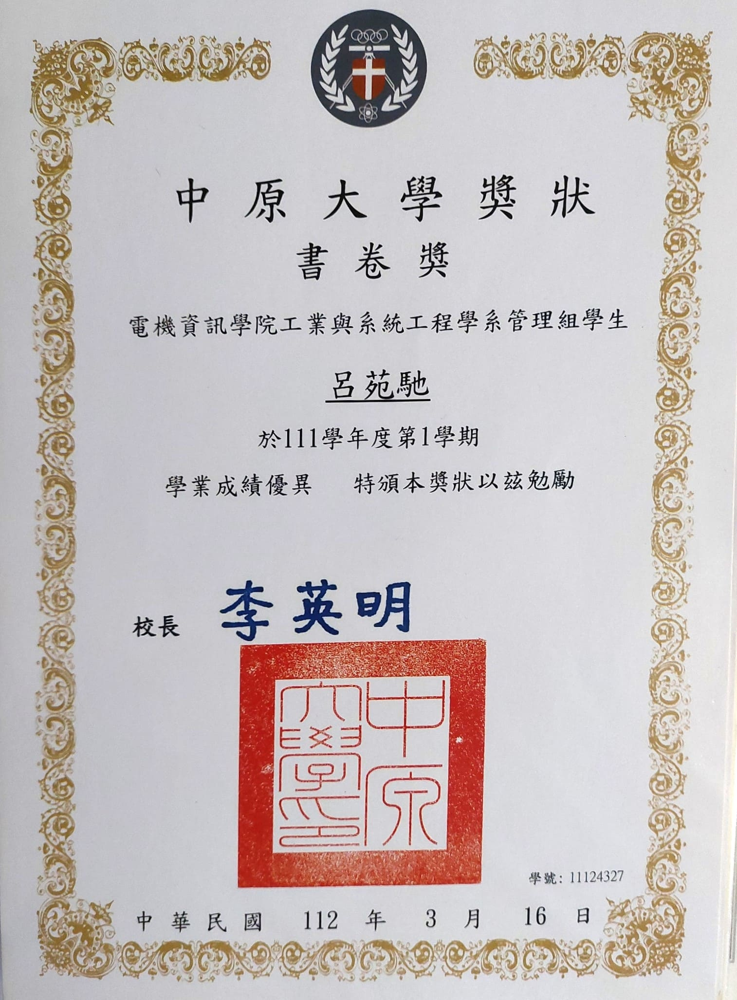
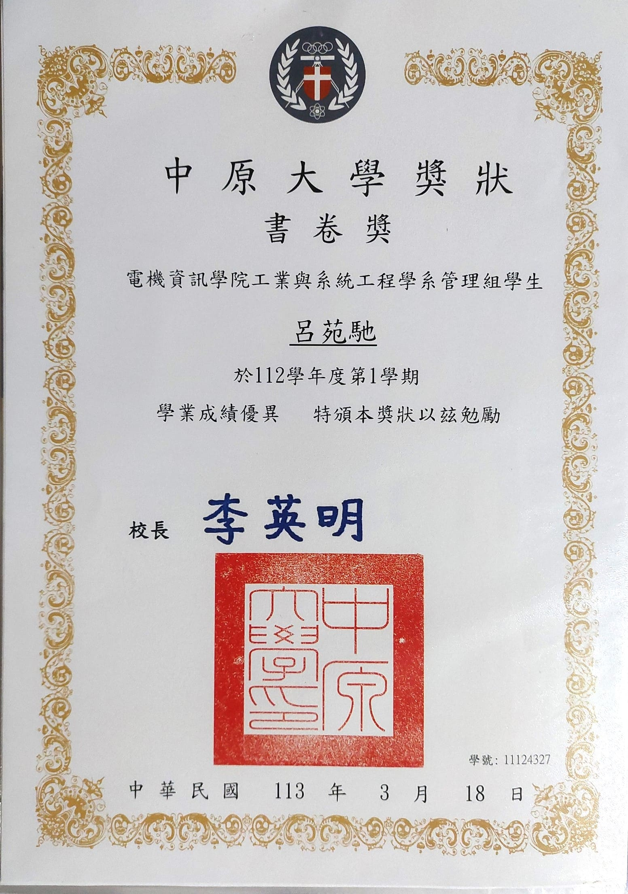

Skill
程式
語言
其他
Experience
全國高中生小論文比賽

高中時和同學參加了小論文比賽
我們研究的是影響紙蜻蜓下墜速率的變因
在歷經各種困難後
最後獲得甲等
影片翻譯
我有時候放長假時會去翻譯一些英文的影片目前除了這部以外還有這系列的第三部曲中文是我翻譯並上字幕的
TOEIC 金色證書
第一次考只拿到藍色證書，這次是第二次
各種書卷獎


雖然沒有拿過第一名
但好歹也是書卷獎吧
四系聯合迎新宿營攝影組
2023.09 擔任宿營的攝影組
在三天裡幫忙拍照與編輯活動需要的照片以及影片
Hobby
聽音樂
我超愛聽音樂
這首是我最近一直循環播放的歌
玩遊戲
玩遊戲是我和朋友維繫關係的方式
這是我和朋友最近遊玩「致命公司」這款遊戲的片段
閱讀小說
我也很喜歡讀小說，特別是科幻小說
因為近期沙丘：第二部上映沒多久，所以我又重新開始看整個系列的小說